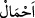
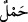
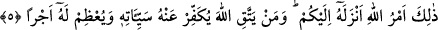

yeniden kanama başlamadıkça sona ermez. Bu gibi kadınların iddetleri ya üç âdet
kanaması ya da menapoz yaşına varmaları iledir. O döneme vardıklarında ise iddetleri
üç aydır.
İmam Secâvendî “lem yahıtne” kelimesinin üzerine okunuşta mutlak vakfa delâlet
etsin diye “tı” harfi koymuştur. Çünkü “lem yahıdne” ibaresi âyetin daha sonra gelen
kısmıyla anlam itibariyle ayrıdır. Zâhire göre aslında “tı” yerine vakfın lazım olduğunu
gösteren “mim” harfinin konması gerekirdi. Çünkü akla gelen ilk ihtimal bu âyetin daha
sonraki âyetle bitişik olduğudur. Bu da mânâyı bozar çünkü boşanan kadının yaşı küçük
olduğundan âdet kanaması görmüyorsa hâmile olmayacağı da bellidir. Oysa bundan
sonraki âyet hâmile olan kadınların iddetinden söz etmektedir.
“Gebe olanların iddetleri ise” âyet metninde yer alan “ulât” kelimesinin tekili sâhibe
anlamına olmak üzere “zât” kelimesidir. “
/Ahmâl” kelimesi, “
/hml” kelimesinin
çoğuludur. Buradaki “haml” yük, ağırlık demektir ki bundan maksad karında taşınan bir
ağırlıktır. Bu da ana karnındaki çocuktur. Buna göre âyetin mânâsı; kadınlardan hâmile
olanların iddetleri üç aydır, demek olur. İddetleri yâni bekleme sürelerinin sonu ise,
ister boşanmış olsunlar, isterse kocaları ölmüş bulunsun “yüklerini bırakmaları
(doğum yapmalarıdır) dır.” Böyle bir kadın yâni kocası ölen veya kocası tarafından
boşanan bir kadın bu olaydan bir an, bir süre sonra yükünü bıraksa yâni çocuğunu
doğursa, bekleme süresi sona erer ve böyle bir kadın ikinci bir kocaya helâl olur. Böyle
bir olayın ardından kısa bir an sonra gerçekleşecek doğumla iddeti sona erdiğine göre
bir saat veya bir gün ya da bir ay sonra neden sona ermesin ki.
Bu âyet-i kerime ile “sizden ölenlerin, geride bıraktıkları eşleri, kendi başlarına
evlenmeden dört ay on gün beklerler.” (el-Bakara, 2/234) âyet-i kerimesindeki
genellik nesh edilmiştir. Çünkü bu suredeki âyet-i kerime Bakara suresindekinden daha
sonra nâzil olmuştur. Sahih bir rivâyete göre Sübey’a binti Haris el-Eslemiyye
kocasının vefatından bir kaç gece sonra çocuğunu dünyaya getirir ve bunu Peygamber
Efendimiz’e hatırlatınca Peygamberimiz: “Sen artık ikinci bir eşe helâl oldun,
evlenebilirsin”[195] diye cevap verir.
“Kim” koymuş olduğu hükümleri ve hakları hususunda “Allah’tan korkarsa Allah
onun işinde bir kolaylık verir.” Bu takvâsı sebebiyle işlerini kolaylaştırır, kendisini
hayra muvaffak kılar, mâsiyetlerden ve kötülüklerden korur. Âyet metninde yer alan
“min” beyan içindir. Burada beyan edici olan “min” âyet sonlarındaki fasılalar
korunmak üzere beyan edilen “yüsran” kelimesinden önce getirilmiştir veya “min”, “fi”
anlamınadır.
5. İşte bu, Allah’ın size indirdiği buyruğudur. Kim Allah’tan korkarsa Allah onun